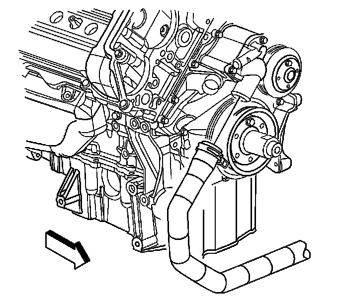
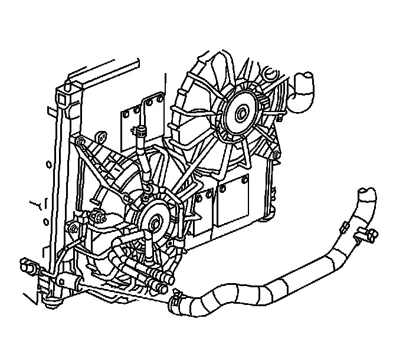

Standard Duty Cooling
Radiator Outlet Hose Replacement (LH2 - Standard Cooling)
Tools Required
J 38185 Hose Clamp Pliers
Removal Procedure

1. Drain the coolant. Refer to Cooling System Draining and Filling (GE 47716 -Vac N Fill Coolant Refill Tool) (Service and Repair)Cooling System Draining and Filling (Static Fill) (Service and Repair) .
2. Remove the air cleaner outlet duct. Refer to Air Cleaner Outlet Duct Replacement (Service and Repair) .
3. Using the J 38185 , disengage the tension on the hose clamp and remove the radiator outlet hose from the thermostat housing.
4. Disconnect the radiator outlet hose from the support bracket.

5. Raise the vehicle. Refer to Lifting and Jacking the Vehicle (Service and Repair) .
6. Remove the front air deflector retainers.
7. Remove the front air deflector.

8. Remove the ECM mounting nuts and reposition ECM aside.
9. Using the J 38185 , disengage the tension on the hose clamp and remove the radiator outlet hose from the radiator.
10. Lower the vehicle.
11. Remove the radiator outlet hose from the vehicle.
Installation Procedure
1. Install the radiator outlet hose to the vehicle.
2. Raise the vehicle.
Important: Lubricate the inside diameters of the hoses with clean coolant prior to installation.
3. Using the J 38185 , disengage the tension on the hose clamp and install the radiator outlet hose to the radiator.
4. Using the J 38185 slide the clamp into the original position.
5. Position ECM on the mounting bracket.
Notice: Refer to Fastener Notice .
6. Install the ECM to mounting nuts.
Tighten the nuts to 8 N.m (71 lb in).
7. Install the front air deflector.
8. Install the front air deflector retainers.
9. Lower the vehicle.
10. Using the J 38185 , disengage the tension on the hose clamp and install the radiator outlet hose to the thermostat housing.
11. Using the J 38185 slide the clamp into the original position.
12. Install the radiator outlet hose to the support bracket.
13. Install the air intake duct. Refer to Air Cleaner Outlet Duct Replacement (Service and Repair) .
14. Fill the cooling system. Refer to Cooling System Draining and Filling (GE 47716 -Vac N Fill Coolant Refill Tool) (Service and Repair)Cooling System Draining and Filling (Static Fill) (Service and Repair) .